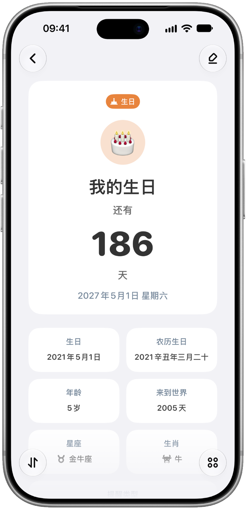
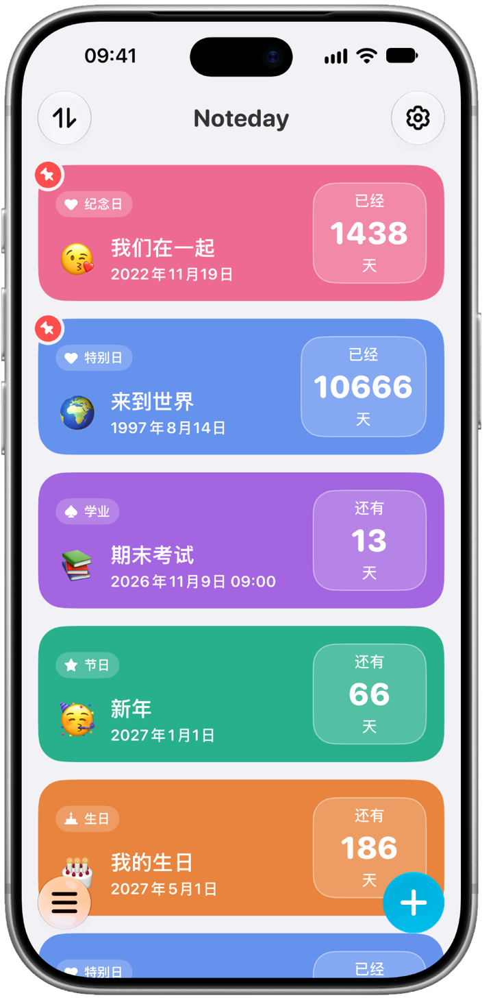
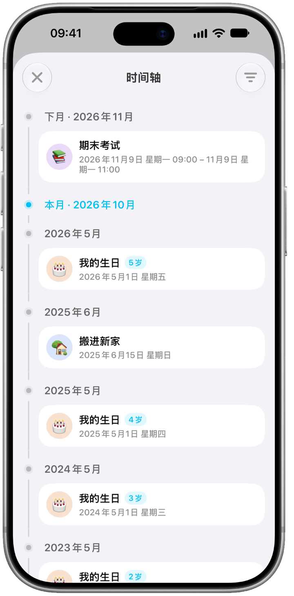

自动倒数，也自动累计
无需区分倒数日和累计日，选择日期，其余的交给 Noteday。
- 支持公历和农历
- 每天、每周、每月、每年，或按“每月第几个星期几”重复
- 为事件添加图文记录

倒数日 · 纪念日 · 生日
只需选择日期，Noteday 会告诉你离它还有几天、已经走过了多久，并在它到来之前提醒你。

功能
把重要的日子，都放在身边。
无需区分倒数日和累计日，选择日期，其余的交给 Noteday。

每日提醒、提前提醒、地点提醒，还有锁定屏幕和灵动岛上的实时活动。
单个事件、事件列表，以及今天、本周、本月、本年的时间进度。
时间轴按月份回顾所有事件，日期计算器帮你算出两个日期之间的天数。

分类有自己的图标和颜色，还可以设置头像、背景、列表样式、应用图标，支持深色模式。
一键导入联系人生日和日历事件，通过 iCloud 在 iPhone 和 iPad 之间同步，还可以与家人朋友共享事件。
无需注册登录，数据只保存在你的设备和你自己的 iCloud 中。随时本地备份，或导出为 CSV 和图片。
免费版与 Noteday Pro
Noteday Pro 一次购买、永久使用。
免费下载
一次购买
生日、纪念日、在一起的第一天、期待已久的旅行……